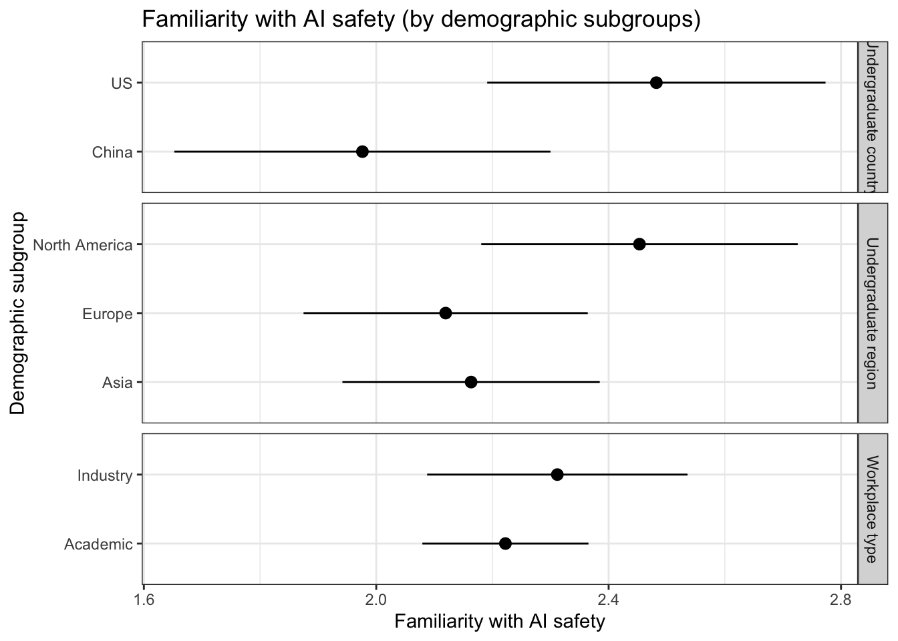
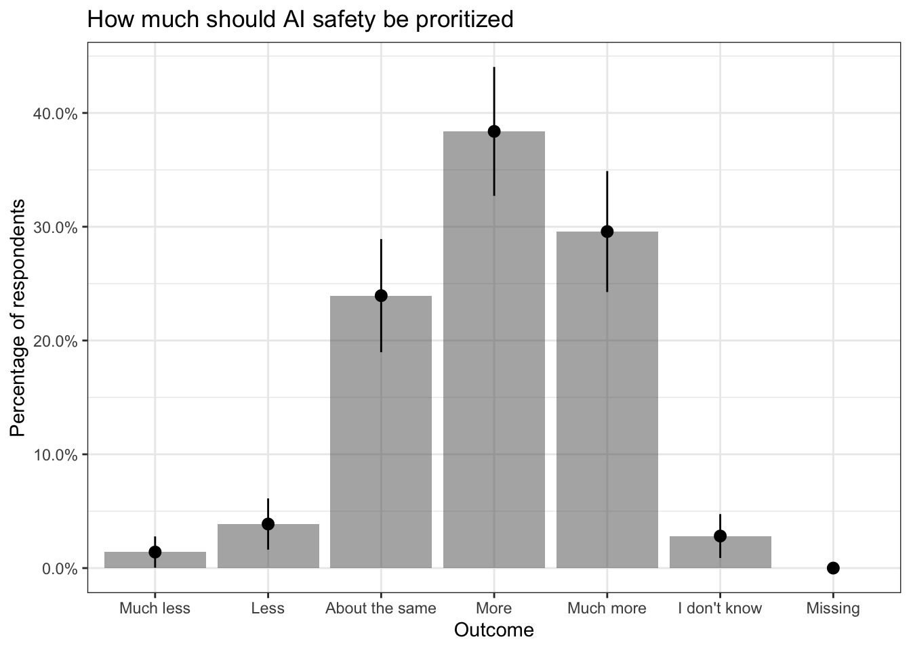
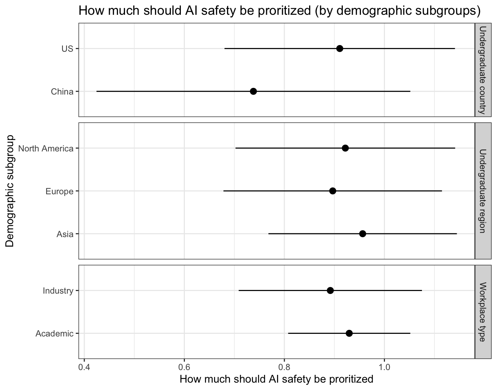
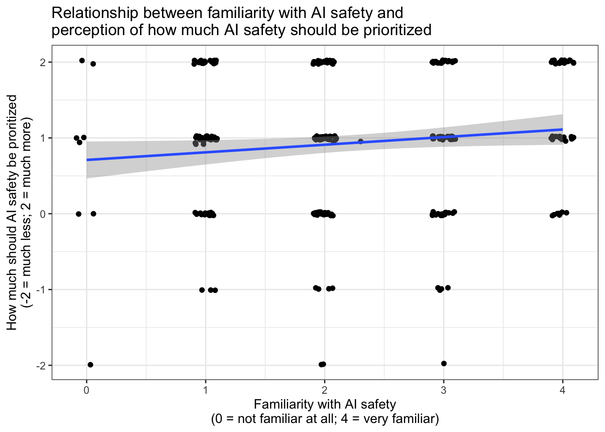

3 AI safety
3.1 Familiarity with AI safety research
3.1.1 Survey question
How familiar are you with AI safety research?
Use the slider to indicate your familiarity.
- 0 means not familiar at all (e.g., this is the first time you’re hearing about the concept)
- 4 means very familiar (e.g., you have worked on the topic)
| Outcome | Proportion | SE | Frequency |
|---|---|---|---|
| Missing | 0.00 | 0.00 | 1 |
|
0.03 | 0.01 | 8 |
| 1 | 0.25 | 0.03 | 71 |
| 2 | 0.32 | 0.03 | 90 |
| 3 | 0.25 | 0.03 | 72 |
|
0.15 | 0.02 | 42 |
3.1.2 Familiarity with AI safety research by demographic subgroups
| Subgroup | Subgroup type | Mean | SE | N |
|---|---|---|---|---|
| US | Undergraduate country | 2.48 | 0.15 | 56 |
| China | Undergraduate country | 1.98 | 0.17 | 42 |
| Europe | Undergraduate region | 2.12 | 0.12 | 69 |
| North America | Undergraduate region | 2.45 | 0.14 | 64 |
| Asia | Undergraduate region | 2.16 | 0.11 | 98 |
| Academic | Workplace type | 2.22 | 0.07 | 217 |
| Industry | Workplace type | 2.31 | 0.11 | 77 |
3.2 Prioritizing AI safety Research
3.2.1 Survey question
How much should AI safety research be prioritized – by, for instance, the tech industry, the academic field, and governments – relative to today?
Answer choices:
- Much less (-2)
- Less (-1)
- About the same (0)
- More (1)
- Much more (2)
- I don’t know
3.2.2 Overall results
| Outcome | Proportion | SE | Frequency |
|---|---|---|---|
| Missing | 0.00 | 0.00 | 0 |
| I don’t know | 0.03 | 0.01 | 8 |
| Much less | 0.01 | 0.01 | 4 |
| Less | 0.04 | 0.01 | 11 |
| About the same | 0.24 | 0.03 | 68 |
| More | 0.38 | 0.03 | 109 |
| Much more | 0.30 | 0.03 | 84 |
3.2.3 Results by demographic subgroups
| Subgroup | Subgroup type | Mean | SE | N |
|---|---|---|---|---|
| US | Undergraduate country | 2.48 | 0.15 | 56 |
| China | Undergraduate country | 1.98 | 0.17 | 42 |
| Europe | Undergraduate region | 2.12 | 0.12 | 69 |
| North America | Undergraduate region | 2.45 | 0.14 | 64 |
| Asia | Undergraduate region | 2.16 | 0.11 | 98 |
| Academic | Workplace type | 2.22 | 0.07 | 217 |
| Industry | Workplace type | 2.31 | 0.11 | 77 |
| 0.1193951 |
| Dependent variable: | |
| prioritize | |
| (Intercept) | 0.100* |
| (0.049) | |
| Familiarity with AI safety | 0.709*** |
| (0.125) | |
| Observations | 284 |
| R2 | 0.014 |
| Adjusted R2 | 0.011 |
| Residual Std. Error | 0.898 (df = 282) |
| F Statistic | 4.078* (df = 1; 282) |
| Note: | p<0.05; p<0.01; p<0.001 |
| Regression analysis: predicting how much AI safety should be prioritized using familiarity with AI safety research |
## Don't know how to automatically pick scale for object of type haven_labelled. Defaulting to continuous.